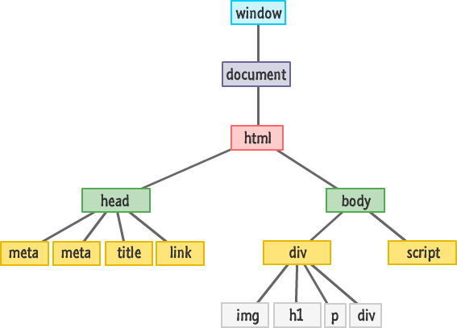

Javascript Basic Concepts.
An analogy to describe the differences between HTML and CSS.
Html is a series of plants. Eucalyptus trees, lavender bushes, sunflowers, ferns and blackberry bushes. If you just plant them in the backyard with no order or plan they still provide fruit and value like the html can provide information, but if you landscape and design the backyard, you get the fruit and flowers as well as a space that you can enjoy being in and it provides a overall better experience. Css can take the information and present it like a landscaper can present the plants. Thoughtful design can make it easier to take in the information and make it an enjoyable experience.
Explain control flow and loops using an example process from everyday life, for example 'waking up' or 'brushing your teeth'. (But not those ones).
Cleaning a mirror! You clean it and then dry it but when drying it you keep wiping with a dry cloth or with a rubber wiper. The whole point is that you wipe until you have a full clear reflection of yourself, you dont just wipe once and then walk away. Control Flow and loops replicate the same process, they take a function/task and repeat it until it meets a certain requirement in the case of the mirror that requirement would be that the mirror gives a clear reflection in a Javascript function it may be that a variable reaches a certain value.
Describe what the DOM is and an example of how you might interact with it.
The DOM is a representation of how the browser reads and interacts with your code. The common image of the DOM is a tree structure that follows the HTML primarily.
The DOM connects the different nodes of the page (Nodes being each square on the image above). As a result we can use various methods of Navigating the code, for example in Javascript we can use:
getElementById()
getElementsByClassName()
querySelector()
and plenty more different ways of getting our code to navigate the DOM.
THe DOM also recognises "events" to trigger sections of code, for example if I *click* on a specific area it can respond with a function matched to the event.
The DOM is a super handy tool to allow our code to navigate and manipulate the structure of our code and how the browser interacts with it.
Explain the difference between accessing data from arrays and objects.
Objects and Arrays are similar in that they can store several pieces of data under one Variable.
For example:
an object could be:
var Andrew = {name: 'andrew',
age: 25,
height: 182}
whereas an array would look like:
var Andrew = ["andrew", 25, "182cm"]
The difference between these two versions of "var Andrew" is that the object has the information (andrew, 25, 182) separated and distinguishable by properties (name, age, height), the array however only contains the information in an ordered sequence.
As a result, the information in an object is found using properties, while in an array it is by using the order of the array to specify which piece of information is wanted.
If I wanted to get the "age: 25" data then, from the object I would say
Andrew.age or Andrew["age"]
If I wanted to get the 25 from the array I would need to specify what position the data is in. In this array I have the options of 0, 1, 2 (arrays start counting at 0 instead of 1), so I would say Andrew[1].
Explain what functions are and why they are useful.
Functions are a block of code intended to do a particular task. Functions are integral to code as they can perform complex tasks when they are triggered. For example if I want my website's background to change colour when I click anywhere, I can create a function that changes the colour, and set it so that whenever I click, my function is triggered. This allows much more complex tasks to be completed and also much faster. Rather than a browser having the same process repeated in the code several times, I can set that process as a function and have my browser refer back to the same function when it needs to.